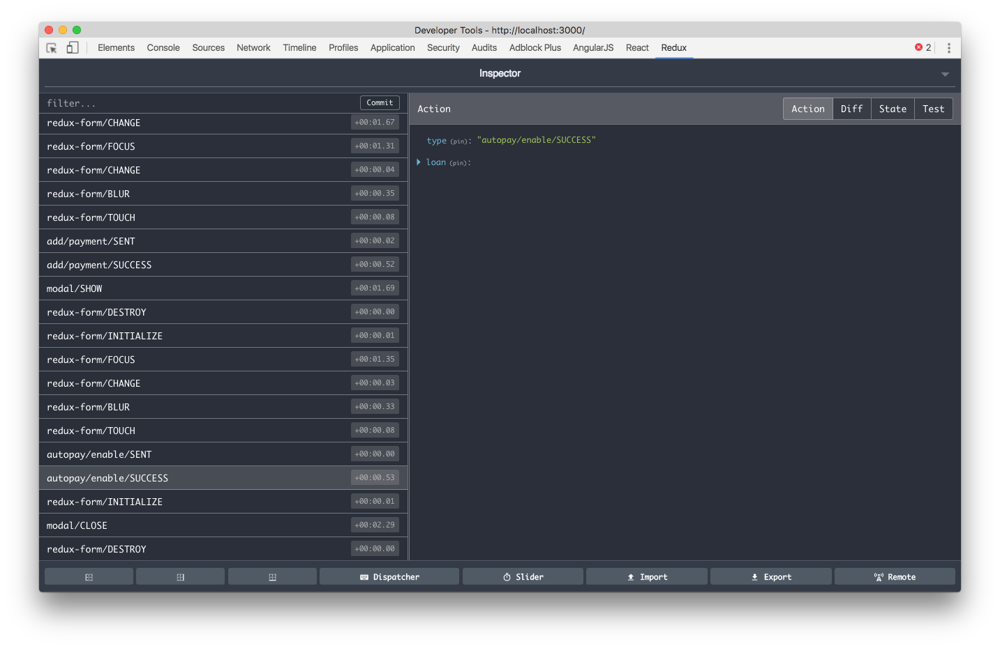
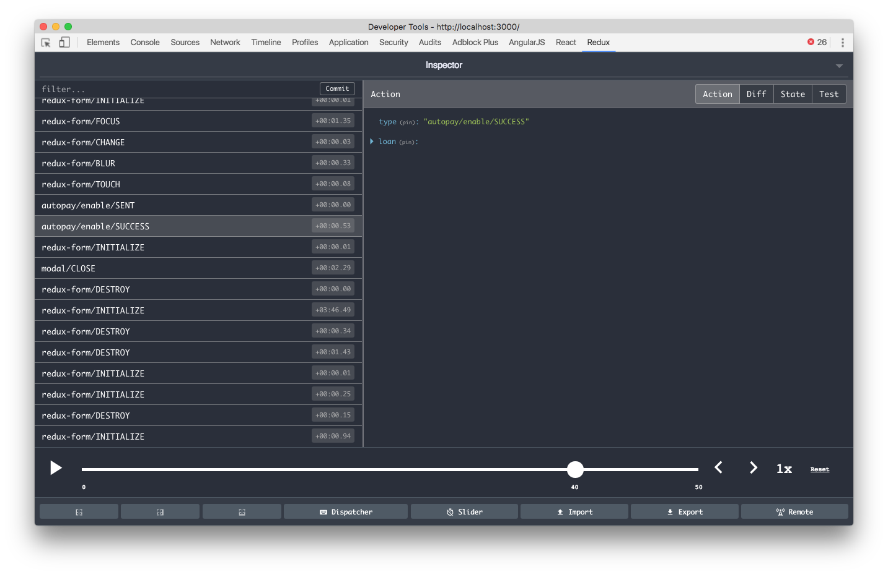
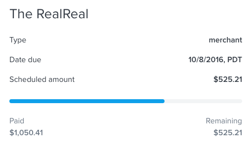
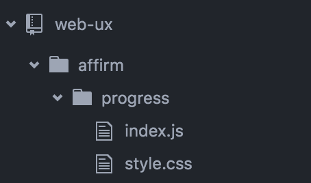
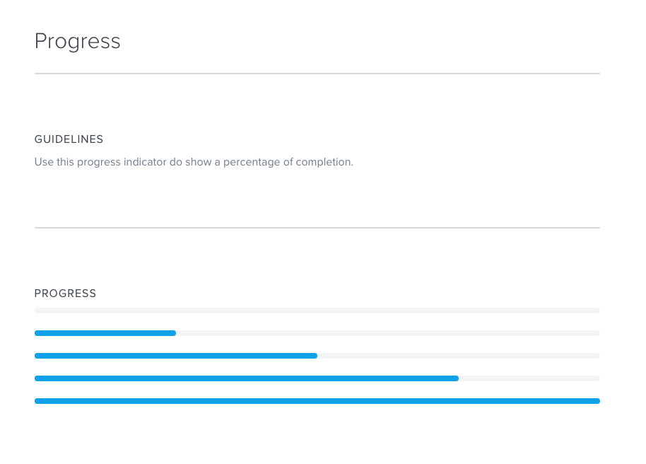

Frontend Web @ Affirm
by Chet Corcos (Sept 2016)
Overview
- functional programming
- build tools
- react and redux
- examples and demos
Functional Programming
... in JavaScript
Functional Programming
Suppose we have a user that looks like this:
const me = {
name: {
first: 'Chet',
last: 'Corcos',
},
birthday: {
month: 12,
day: 28,
},
}
Functional Programming
Maybe we want to know if today is this user's birthday:
// const me = {
// name: {
// first: 'Chet',
// last: 'Corcos',
// },
// birthday: {
// month: 12,
// day: 28,
// },
// }
const isBirthday = (user, date) => {
return date.getMonth() + 1 === user.birthday.month // month is zero indexed
&& date.getDate() === user.birthday.day
}
Functional Programming
Maybe we want to format the user info:
// const me = {
// name: {
// first: 'Chet',
// last: 'Corcos',
// },
// birthday: {
// month: 12,
// day: 28,
// },
// }
const formatUser = user => {
user.name = user.name.first + user.name.last
user.birthday = user.birthday.month + '/' + user.birthday.day
return user
}
Functional Programming
Let's see if it works:
const today = new Date()
isBirthday(me, today) // false
formatUser(me) // {name: 'Chet Corcos', birthday: '12/18'}
isBirthday(me, today) // Error?!
Functional Programming
The problem is in-place mutation.
const formatUser = user => {
// mutated in place
user.name = user.name.first + user.name.last
user.birthday = user.birthday.month + '/' + user.birthday.day
return user
}
Functional Programming
Let's return a new object instead.
// const formatUser = user => {
// user.name = user.name.first + user.name.last
// user.birthday = user.birthday.month + '/' + user.birthday.day
// return user
// }
const formatUser = user => {
return {
name: user.name.first + user.name.last,
birthday: user.birthday.month + '/' + user.birthday.day,
}
}
Functional Programming
And now it works:
const today = new Date()
isBirthday(me, today) // false
formatUser(me) // {name: 'Chet Corcos', birthday: '12/18'}
isBirthday(me, today) // false
Functional Programming
Lesson 1: do not mutate data in-place
- immutable data is easier to understand
- immutable data is easier to predict
- immutable data is easier to statically analyze
Functional Programming
Suppose we have some data that looks like this:
const loans = [
{status: 'due', amount: 10},
{status: 'overdue', amount: 20},
{status: 'overdue', amount: 30},
]
Functional Programming
Maybe we want to find the total overdue amount:
// const loans = [
// {status: 'due', amount: 10},
// {status: 'overdue', amount: 20},
// {status: 'overdue', amount: 30},
// ]
const getTotalOverdueAmount = loans => {
let total = 0
for (let i = 0; i < loans.length; i++) {
if (loans[i].status === 'overdue') {
total += loans[i].amount
}
}
return total
}
Functional Programming
And it works:
// const loans = [
// {status: 'due', amount: 10},
// {status: 'overdue', amount: 20},
// {status: 'overdue', amount: 30},
// ]
getTotalOverdueAmount(loans) // 50
Functional Programming
Now there's a new requirement and we want to exclude disputed loans from the calculation.
const loans = [
{status: 'due', amount: 10, disputed: false},
{status: 'overdue', amount: 20, disputed: true},
{status: 'overdue', amount: 30, disputed: false},
]
const getTotalOverdueAmount = loans => {
let total = 0
for (let i = 0; i < loans.length; i++) {
if (loans[i].status === 'overdue') {
// add a new condition
if (!loans[i].disputed) {
total += loans[i].amount
}
}
}
return total
}
Functional Programming
And this works too:
// const loans = [
// {status: 'due', amount: 10, disputed: false},
// {status: 'overdue', amount: 20, disputed: true},
// {status: 'overdue', amount: 30, disputed: false},
// ]
getTotalOverdueAmount(loans) // 30
Functional Programming
So what's wrong with this code?
const getTotalOverdueAmount = loans => {
let total = 0
for (let i = 0; i < loans.length; i++) {
if (loans[i].status === 'overdue') {
if (!loans[i].disputed) {
total += loans[i].amount
}
}
}
return total
}
- Hard to read!
- Harder to read and understand with more requirements.
- This code isn't declarative.
Functional Programming
What is declarative programming?
Say what you want, not how you want it done.
Functional Programming
Let's rewrite this code to be more declarative.
// const getTotalOverdueAmount = loans => {
// let total = 0
// for (let i = 0; i < loans.length; i++) {
// if (loans[i].status === 'overdue') {
// total += loans[i].amount
// }
// }
// return total
// }
const getTotalOverdueAmount = loans => {
const overdueLoans = loans.filter(loan => loan.status === 'overdue')
const totalAmount = overdueLoans.reduce((total, loan) => total + loan.amount, 0)
return totalAmount
}
We didn't say how to iterate over the list...
Functional Programming
... but we can do even better.
// const getTotalOverdueAmount = loans => {
// const overdueLoans = loans.filter(loan => loan.status === 'overdue')
// const totalAmount = overdueLoans.reduce((total, loan) => total + loan.amount, 0)
// return totalAmount
// }
const sum = (a, b) => a + b
const propEq = (prop, value) => obj => obj[prop] === value // a curried function!
const getTotalOverdueAmount = loans => {
const overdueLoans = loans.filter(propEq('status', 'overdue'))
const totalAmount = overdueLoans.reduce(sum, 0)
return totalAmount
}
Functional Programming
A curried funtion takes its argument's one at a time.
const propEq = prop => value => obj => obj[prop] === value
const isOverdue = propEq('status')('overdue')
// obj => obj['status'] === 'overdue'
const overdueLoans = loans.filter(isOverdue)
But some syntactic sugar is OK.
const propEq = (prop, value) => obj => obj[prop] === value
const isOverdue = propEq('status', 'overdue')
Functional Programming
Now let's filter disputed loans as well.
// const getTotalOverdueAmount = loans => {
// const overdueLoans = loans.filter(propEq('status', 'overdue'))
// const totalAmount = overdueLoans.reduce(sum, 0)
// return totalAmount
// }
const getTotalOverdueAmount = loans => {
const overdueLoans = loans.filter(propEq('status', 'overdue'))
// create a new variable
const notDiputed = overdueLoans.filter(propEq('disputed', false))
// filter with the new variable
const totalAmount = notDiputed.reduce(sum, 0)
return totalAmount
}
Functional Programming
We can still do even better.
// const getTotalOverdueAmount = loans => {
// const overdueLoans = loans.filter(propEq('status', 'overdue'))
// const notDiputed = overdueLoans.filter(propEq('disputed', false))
// const totalAmount = notDiputed.reduce(sum, 0)
// return totalAmount
// }
const filter = fn => list => list.filter(fn)
const reduce = (fn, init) => list => list.reduce(fn, init)
const pipe = fnList => value => fnList.reduce((acc, fn) => fn(acc), value)
const getTotalOverdueAmount = pipe([ // a point-free function!
filter(propEq('status', 'overdue')),
filter(propEq('disputed', false)),
reduce(sum, 0),
])
Functional Programming
What is a point-free function?
"Point-free programming (a.k.a tacit programming) is when a function never identifies its arguments (points) and is intead a specified as composition of other functions."
const getTotalOverdueAmount = pipe([
filter(propEq('status', 'overdue')),
filter(propEq('disputed', false)),
reduce(sum, 0),
])
Functional Programming
Now our code is declarative, but is it performant?
How many times are we iterating through the list?
const getTotalOverdueAmount = pipe([
filter(propEq('status', 'overdue')), // one
filter(propEq('disputed', false)), // two
reduce(sum, 0), // three times!
])
I guess declarative programming sucks... Except it doesn't!
We can use generators!
Functional Programming
What's a generator?
A generator is a function that yields values.
function *Counter() {
let id = 0
while(true) {
yield id++
}
}
const counter = new Counter()
counter.next() // {value: 1, done: false}
counter.next() // {value: 2, done: false}
counter.next() // {value: 3, done: false}
Functional Programming
Why do we use generators?
Generators help us iterate lazily over lists.
const list = [1, 2, 3]
const ListGenerator = new list[Symbol.iterator]
// WARNING: generators are stateful!
const generator = new ListGenerator()
generator.next() // {value: 1, done: false}
generator.next() // {value: 2, done: false}
generator.next() // {value: 3, done: false}
generator.next() // {value: undefined, done: true}
[...ListGenerator] // [1, 2, 3]
Functional Programming
Let's make a lazy filter!
const lazyFilter = fn => function*(Generator) {
const generator = new Generator()
while(true) {
const result = generator.next()
if (result.done) {
break
}
if (fn(result.value)) {
yield result.value
}
}
}
Functional Programming
Let's make a lazy reduce!
const lazyReduce = (fn, init) => function*(Generator) {
const generator = new Generator()
let acc = init
while(true) {
const result = generator.next()
if (result.done) {
break
}
acc = fn(acc, result.value)
yield acc
}
}
Functional Programming
Let's make a lazy pipe!
const lazyPipe = fnList => iterable => {
const InputGenerator = new iterable[Symbol.iterable]()
const OutputGenerator = fnList.reduce((gen, fn) => fn(gen), InputGenerator)
return [...OutputGenerator]
}
Functional Programming
And now we're declarative and performant!
// const getTotalOverdueAmount = pipe([
// filter(propEq('status', 'overdue')),
// filter(propEq('disputed', false)),
// reduce(sum, 0),
// ])
const getTotalOverdueAmount = lazyPipe([
lazyFilter(propEq('status', 'overdue')),
lazyFilter(propEq('disputed', false)),
lazyReduce(sum, 0),
])
Functional Programming
Now suppose we're manipulating a large amount of data.
const actions = [
{type: 'click-make-payment', loanAri: 'JJR5-0PLM'},
{type: 'change-payment-method', instrumentAri: 'AF3S-353H'},
{type: 'change-amount', value: 'upcoming-count'},
{type: 'submit-make-payment'}
// many many more...
]
Functional Programming
What happens when we want to append an action to this array?
const appendAction = (action) => {
actions.push(action) // NO! That's impure!
}
const appendAction = (actions, action) => {
actions.push(action) // NO! That's in-place mutation!
return actions
}
const appendAction = (actions, action) => {
return [...actions, action] // Much better... but is it performant?
}
Functional Programming
Why immutability not performant?
- must clone the array just to append an item
- lots of memory for the garbage collector to clean up
const appendAction = (actions, action) => {
return [...actions, action]
}
I guess immutability sucks... Except it doesn't!
We can use persistent data structures!
Functional Programming
What are persistent data structures?
Data structures that preseve the previous version of itself when its modified... like a linked-list!
Functional Programming
What is a linked list?
... just kidding
Functional Programming
How do we use persistent data structures without hating our lives?
ImmutableJS to the rescue!
import { List } from 'immutable'
const actions = new List([
{type: 'click-make-payment', loanAri: 'JJR5-0PLM'},
{type: 'change-payment-method', instrumentAri: 'AF3S-353H'},
{type: 'change-amount', value: 'upcoming-count'},
{type: 'submit-make-payment'}
// many many more...
])
const trackAction = (actions, action) => {
return actions.push(action)
}
Functional Programming
ImmutableJS has all kinds of persistent data structures.
import { Map } from 'immutable'
const me = new Map({
name: new Map({
first: 'Chet',
last: 'Corcos',
}),
birthday: new Map({
month: 12,
day: 28,
})
})
me.getIn(['name', 'first']) // 'Chet'
Extra Resources
- "Why Ramda?" -- about currying, function composition, and point-free programming
- "Mostly Adequate Guide" ...to functional programming in JavaScript
- "Functional Programming for JavaScript People"
Build Tools
Build Tools
Why do we need build tools for the web?
Build Tools
Reason 1: better code reusability
Here's an example of the old school way to build websites.
<html>
<head>
<script src="jquery.js"></script>
<script src="date-picker.js"></script>
<script src="facebook-like-button.js"></script>
</head>
<body>
<div id="date-picker"></div>
<div id="like-button"></div>
<script>
window.DatePicker('date-picker')
window.LikeButton('like-button')
</script>
</body>
</html>
Right, Libor?
Build Tools
The biggest problem is that we have a global namespace
<script>
window.DatePicker('date-picker')
window.LikeButton('like-button')
</script>
Build Tools
What if our components depend on different versions of jQuery?
<script src="jquery.js"></script>
<script src="date-picker.js"></script>
<script src="facebook-like-button.js"></script>
Build Tools
Solution 1: let's use modules!
const LikeButton = require('like-button')
const DatePicker = require('date-picker')
DatePicker('date-picker')
LikeButton('like-button')
Build Tools
... but it doesnt work
Uncaught ReferenceError: require is not defined
Build Tools
That's why we have module bundlers.

There are lots of module bundlers but Webpack is the best!
Build Tools
Why is Webpack the best?
... but we'll touch on this later if we have time.
Build Tools
Reason 2: so we can use new language features.
... and still support older browsers.
Build Tools
There are new JavaScript features
// old school JavaScript
function variadicFunction() {
var args = Array.prototype.slice.call(arguments) // very ouch
// ...
}
// new school JavaScript
function variadicFunction(...args) {
// ...
}
Build Tools
There are new CSS features
/* old school CSS */
.grid {
margin: -10px;
}
.grid .grid-item {
margin: 10px;
}
/* new school CSS */
:root {
--grid-padding: 10px;
}
.grid {
margin: var(--grid-padding);
& .grid-item {
margin: var(--grid-padding);
}
}
Build Tools
Transpilers let us compile our new code into old code.
Build Tools
Reason 3: find bugs and enforce best practices.
Build Tools
How do does ESLint help?
const inc = x => x + 1
inc(a) // error "a" is not defined no-undef
const person = {
name: 'chet',
age: 25 // error Missing trailing comma. comma-dangle
}
Build Tools
How does Stylelint help?
.btn {
border-radus: 5px; /* Unexpected unknown property "border-radus" property-no-unknown */
}
Build Tools
How does FlowType help?
// @flow
function foo(x) {
return x * 10;
}
foo('Hello, world!');
// 5: foo('Hello, world!');
// ^^^^^^^^^^^^^^^^^^^^ function call
// 3: return x * 10;
// ^ string. This type is incompatible with
// 3: return x * 10;
// ^^^^^^ number
Build Tools
How does FlowType help?
// @flow
type Status = 'active' | 'inactive'
type Person = {
age: number,
name?: string,
status: Status,
}
const incAge = (person : Person) : Person => ({
...person,
age: person.age + 1
})
Appendix: Webpack
Appendix: Webpack
Asset Loaders let you manage all assets through JavaScript...
webpackConfig = {
loaders: [
{
test: /\.js$/,
loader: ['babel'],
},
{
test: /\.css$/,
loader: ['style', 'css', 'postcss'],
},
]
}
Appendix: Webpack
... so you can import CSS to create modular components.
import React from 'react'
import 'affirm/badge/style.css'
const Badge = (props) =>
<div className="badge">
{props.children}
</div>
export default Badge
Appendix: Webpack
Feature Flags lets you enable / disable development tools at compile-time.
if (process.env.NODE_ENV === 'development') {
const devtool = require('redux-devtool')
devtool.configure()
}
if (process.env.NODE_ENV === 'production') {
tracking.start()
}
Appendix: Webpack
Hot Module Replacement gives you blazingly fast rebuilds without having to refresh the browser.
const callback = event =>
console.log(event)
window.events.subscribe(callback)
if (module.hot) {
module.hot.accept()
module.hot.dispose(() => {
// cleanup any statefulness
window.events.unsubscribe(callback)
})
}
Appendix: Webpack
Code Splitting let's you break up your application into mutliple entry points.
module.exports = {
entry: {
portal: "./src/portal.js",
login: "./src/login.js",
},
output: {
filename: "[name]-[hash].js",
},
plugins: [
// and you can create a file with all the common code
new webpack.optimize.CommonsChunkPlugin("common-[hash].js"),
],
}
Appendix: Webpack
Here's how you might use it.
<!-- portal.html -->
<script src='portal-1ed1x3232w.js'>
<script src='common-djs39dn39s.js'>
<!-- login.html -->
<script src='login-sufnew3if8.js'>
<script src='common-djs39dn39s.js'>
But that's for the old school web!
Appendix: Webpack
Async Module Loading let's you fetch source code on-demand.
// routes.js
page('/login', async () => {
render(<Loading/>)
const Login = await System.load('./src/login')
render(<Login/>)
})
page('/portal', async () => {
render(<Loading/>)
const Portal = await System.load('./src/portal')
render(<Portal/>)
})
React and Redux
React
What:
- declarative UI rendering using virtual dom diffing
- cross-browser sanitized event system
- optional HTML dialect called JSX
- DOM, HTML5 Canvas, WebGL, Terminal, iOS, and Android renderers
- developed by Facebook
React
Example: Hello World
import React from 'react'
import ReactDOM from 'react-dom'
const App = (props) =>
<div className="app">
Hello World
</div>
const root = document.getElementById('root')
ReactDOM.render(<App/>, root)
React
Example: Hello {name}
import React from 'react'
import ReactDOM from 'react-dom'
const App = (props) =>
<div className="app">
Hello {props.name}
</div>
const root = document.getElementById('root')
ReactDOM.render(<App name="chet"/>, root)
React
JSX: HTML-flavored JavaScript
// before
const App = (props) =>
<div className="app">
Hello {props.name}
</div>
ReactDOM.render(<App name="chet"/>, root)
// after
const App = (props) =>
React.createElement('div', {className:'app'}, [
`Hello ${props.name}`
])
ReactDOM.render(React.createElement(App, {name:'chet'}), root)
React
Example: iOS renderer example
import React from 'react'
import { AppRegistry } from 'react-native'
import View1 from './src/view1'
import View2 from './src/view1'
const App = (props) =>
<TabBarIOS>
<TabBarIOS.Item title="view1" icon={icon1}>
<View1/>
</TabBarIOS.Item>
<TabBarIOS.Item title="view2" icon={icon2}>
<View2/>
</TabBarIOS.Item>
</TabBarIOS>
// the rest is handled in swift
AppRegistry.registerComponent('App', <App/>)
Redux
"A predictable state container for JavaScript apps"
- views and logic are all pure functions
- global action event bus
- state machine using a reducing function
Redux
Concept:
import { createStore } from 'redux'
const initialState = { count: 0 }
const reducer = (state=initialState, action) => {
switch(action.type) {
case 'increment':
return {
...state,
count: state.count + 1,
}
}
}
const store = createStore(reducer)
store.getState() // { count: 0 }
store.dispatch({type: 'increment'})
store.getState() // { count: 1 }
Redux
Example: Vanilla JS
store.subscribe(state => {
const root = document.getElementById('root')
root.innerHTML = `
<div>
<button id="increment">increment</button>
<span>${state.count}</span>
</div>
`
document.getElementById('incremenet').on('click', () => {
store.dispatch({type: 'increment'})
})
})
Redux
Example: React
import { connect } from 'react-redux'
const CounterView = (props) =>
<div>
<button onClick={props.increment}>increment</button>
<span>{props.count}</span>
</div>
const mapStateToProps = state => ({
count: state.count
})
const mapDispatchToProps = dispatch => ({
increment: () => dispatch({type: 'increment'})
})
const Counter = connect(mapStateToProps, mapDispatchToProps)(CounterView)
Redux
Middleware: get inbetween dispatch and the reducer
import track from 'shared/src/scripts/analytics/tracking'
const middleware = store => next => action => {
track.event('redux_action', { action })
return next(action)
}
Redux
Dev Tools: chrome extension
Redux
Time Travel: replay sessions
Example
- How to build a modular UI component?
- How to add the component to the Styleguide?
- How to wire up the component into an app?
Example
Lets build a "progress" component:
Example
Create the index.js and style.css files
Example
Import React and the CSS file
// affirm/progress/index.js
import React from 'react'
import 'affirm/progress/style.css'
Example
Build the component
// affirm/progress/index.js
const Progress = (props) => {
const width = `${props.percent}%`
return (
<div className="progress-bar">
<div className="progress-bar__fill" style={{ width }}/>
</div>
)
}
Example
Define the component's propTypes
// affirm/progress/index.js
Progress.propTypes = {
percent: React.PropTypes.number.isRequired,
}
Example
Import the base CSS file
/* affirm/progress/style.js */
@import 'affirm/styles/base';
Example
Write some CSS styles
/* affirm/progress/style.js */
.progress-bar {
width: 100%;
height: var(--spacing-small);
border-radius: var(--border-radius);
background-color: var(--black-10);
margin-bottom: var(--spacing-large);
}
.progress-bar__fill {
height: 100%;
background-color: var(--indigo);
border-radius: var(--border-radius);
}
Example
Please use BEM CSS naming conventions!
/* Block component */
.btn {}
/* Element that depends upon the block */
.btn__price {}
/* Modifier that changes the style of the block */
.btn--orange {}
.btn--big {}
Example
Create a guide in the Styleguide
Example
Create a guide in the Styleguide
import React from 'react'
import Guide from 'styleguide/src/guide'
import Progress from 'affirm/progress'
const ProgressBars = () =>
<Guide title="Progress">
<Guide.Section title="Guidelines">
<p>Use this progress indicator do show a percentage of completion.</p>
</Guide.Section>
<Guide.Section title="Progress">
<Progress percent={0}/>
<Progress percent={25}/>
<Progress percent={50}/>
<Progress percent={75}/>
<Progress percent={100}/>
</Guide.Section>
</Guide>
export default ProgressBars
Example
Should I put this component in the Styleguide?
- Will this component be reused in other applications?
- What user interaction am I not currently able to do with the existing set of components?
- New Styleguide components should be UX driven not product driven.
Example
Wiring up a Counter component
- synchronous action to increment the counter
- asynchronous action to decrement the counter
- REST endpoint to decrement the counter
Example
Create a mock endpoint
// app/server.js
app.post('/decrement', function(request, response) {
const count = request.body.count
const result = { count: count - 1 }
// 1 second delay on the response
setTimeout(function() {
response.send(result)
}, 1000)
})
Example
Create a client side function to make the HTTP request
// app/src/api.js
export async function decrement(count) {
return fetch('/decrement', {
method: 'POST',
headers: {
Accept: 'application/json',
'Content-Type': 'application/json',
},
body: JSON.stringify({ count }),
})
}
Example
Define some action types
// app/src/defs.js
export const INCREMENT = 'counter/increment'
export const DECREMENT_SENT = 'counter/decrement/sent'
export const DECREMENT_SUCCESS = 'counter/decrement/success'
export const DECREMENT_FAILED = 'counter/decrement/failed'
Example
Define the synchronous actions creators
// app/src/actions/sync.js
export const increment = () => ({
type: defs.INCREMENT,
})
export const decrementSent = () => ({
type: defs.DECREMENT_SENT
})
export const decrementSuccess = count => ({
type: defs.DECREMENT_SUCCESS,
count,
})
export const decrementFailed = () => ({
type: defs.DECREMENT_FAILED,
})
Example
Define the async action creators
// app/src/actions/async.js
export function decrement(count) {
return async dispatch => {
dispatch(sync.decrementSent())
const response = await api.decrement(count)
if (response.status !== 200) {
dispatch(sync.decrementFailed())
} else {
const result = await response.json()
dispatch(sync.decrementSuccess(result.count))
return result.count
}
}
}
Example
Define the initial state
// app/src/reducer/index.js
const initialState = Immutable.Map({
count: 0,
pendingDecrement: false,
})
const reducer = (state=initialState, action) => {
// we'll get back to this
}
Example
Define the state mutators
// app/src/reducer/mutators.js
export const increment = state =>
state.updateIn(['count'], count => count + 1)
export const setDecrementPending = value => state =>
state.setIn(['pendingDecrement'], value)
export const setCount = value => state =>
state.setIn(['count'], value)
Example
Define the state reducer
// app/src/reducer/index.js
const reducer = (state=initialState, action) => {
case defs.INCREMENT:
return mutate.increment(state)
case defs.DECREMENT_SENT:
return mutate.setDecrementPending(true)(state)
case defs.DECREMENT_SUCCESS:
return pipe([
mutate.setDecrementPending(false),
mutate.setCount(action.count),
], state)
case defs.DECREMENT_FAILED:
return pipe([
mutate.setDecrementPending(false),
mutate.addSnackbarItem('Decrement counter failed.'),
], state)
default:
return state
}
Example
Wire up the component
// app/src/components/counter/index.js
import React from 'react'
import { connect } from 'react-redux'
import Counter from 'app/src/components/counter/view'
import { increment, decrement } from 'crm/src/actions'
// get the relevant state
const mapStateToProps = state => ({
disabled: state.getIn(['pendingDecrement']),
count: state.getIn(['count']),
})
// continued...
Example
Wire up the component
// app/src/components/counter/index.js
// wire up the actions
const mapDispatchToProps = dispatch => ({
onIncrement: () => dispatch(increment()),
onDecrement: count => dispatch(decrement(count))
})
// connect the component to redux
export default connect(mapStateToProps, mapDispatchToProps)(Counter)
Example
Use the component wherever you'd like
import Counter from 'app/src/components/counter'
// <Counter/>
Demo Time
- Affirm Styleguide + Modular UI Components
- CRM + Redux Dev Tools
- Static type checking with Flow